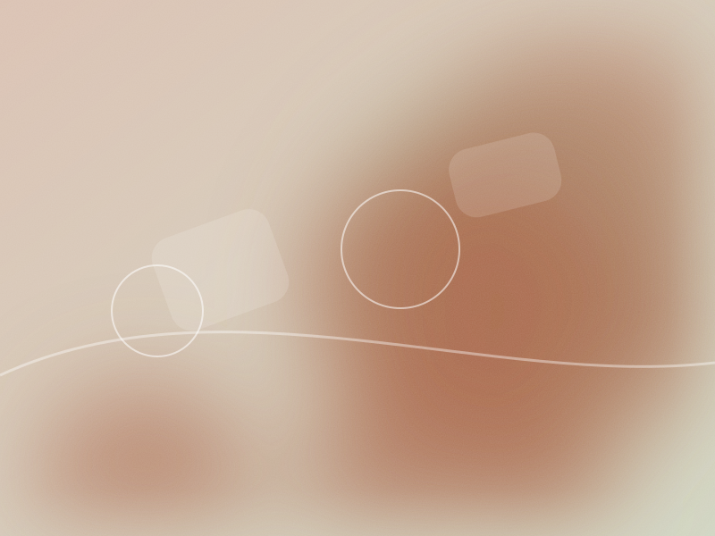
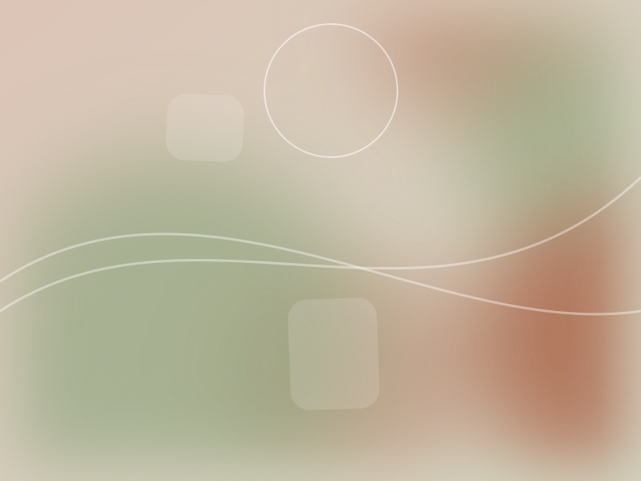
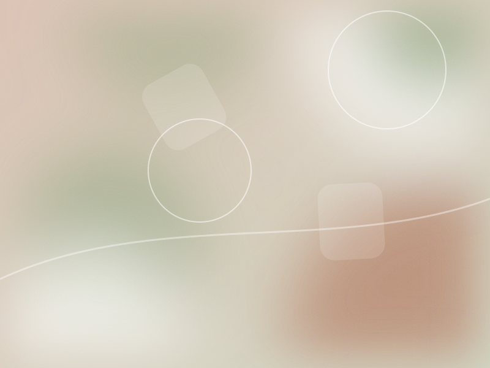
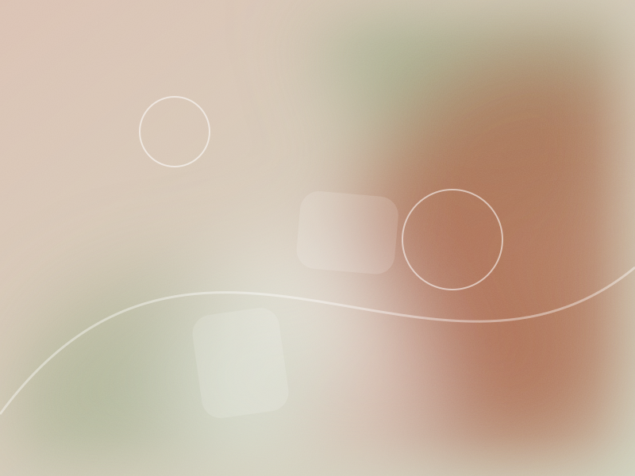
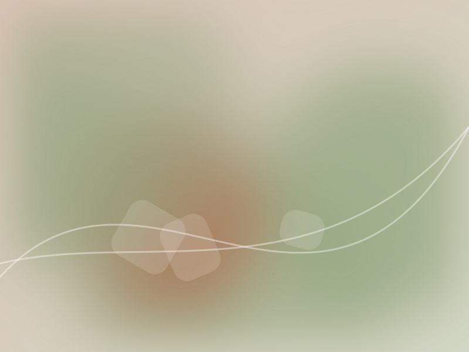
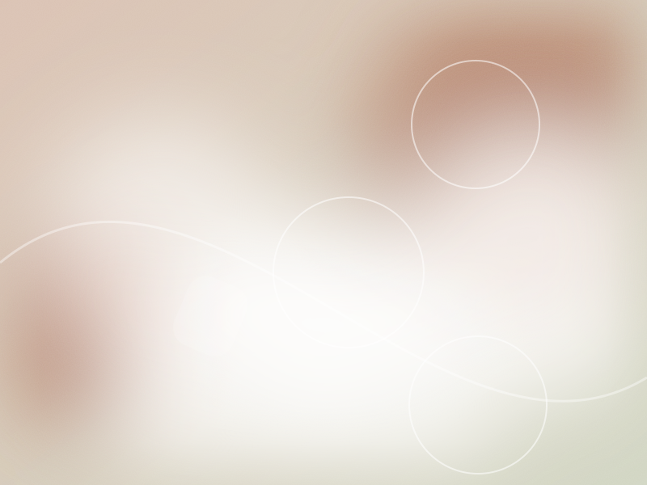
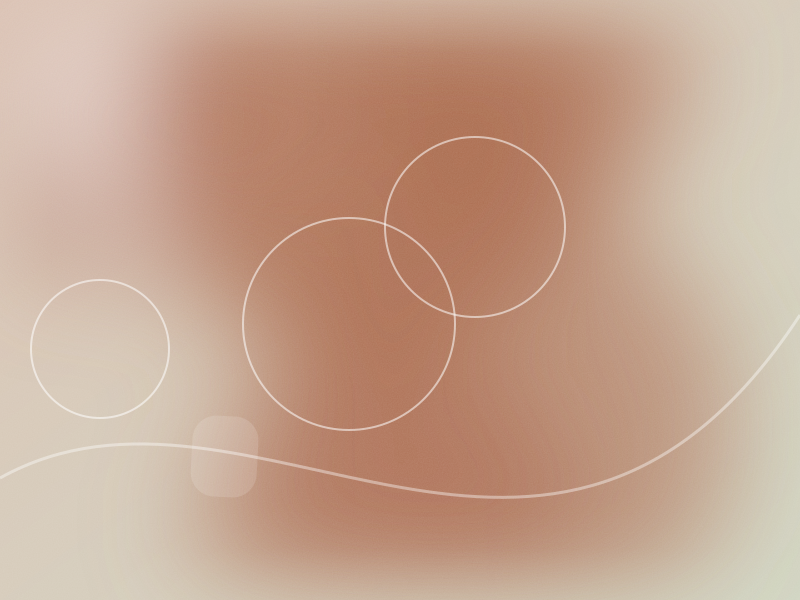

◒
Sunday Stoneware
Glazed ceramic · $28
Thoughtful shapes, quiet colors, and things made to stay. A fictional storefront concept.
THE SLOW LIVING EDITIONGlazed ceramic · $28
Hand-finished glass · $36
Warm ambient light · $64
Easy ceramics and small pieces for everyday meals.
Warm layers that make the end of the day feel slower.
Useful objects with a shape and story worth keeping.
Every item in this fictional collection is imagined around care, repair, and daily use.
Quiet surfaces designed to sit comfortably in a lived-in home.
Timeless shapes that can stay useful through changing seasons.
A concept for thoughtful making, not a real production claim.
Simple ideas for making an ordinary meal feel like a moment.
Layer a room with a softer glow and a little more calm.
Why the things we choose to keep can matter more than more things.
Morrow Market is a storefront design exercise about warm editorial layouts, clear product details, and low-pressure discovery.
Each product card keeps its description and sample price close by.
Generous space lets each object speak for itself.
No. It is a fictional storefront concept.
No purchases, payments, or real inventory are connected.
It counts sample items locally for this page visit only.
Generated art, parallax depth and glass details.





Discover objects at Morrow Market.

Discover ceramics at Morrow Market.

Discover linen at Morrow Market.

Discover candles at Morrow Market.
Discover objects at Morrow Market.
Discover ceramics at Morrow Market.
Log in with the demo login to choose one. Nothing is charged.
No. The bag is only a demo counter.
They are fictional concepts.
They feel warm and handmade.
No sign-up needed; this is a visual concept, and no contact details are collected.
Explore the concept